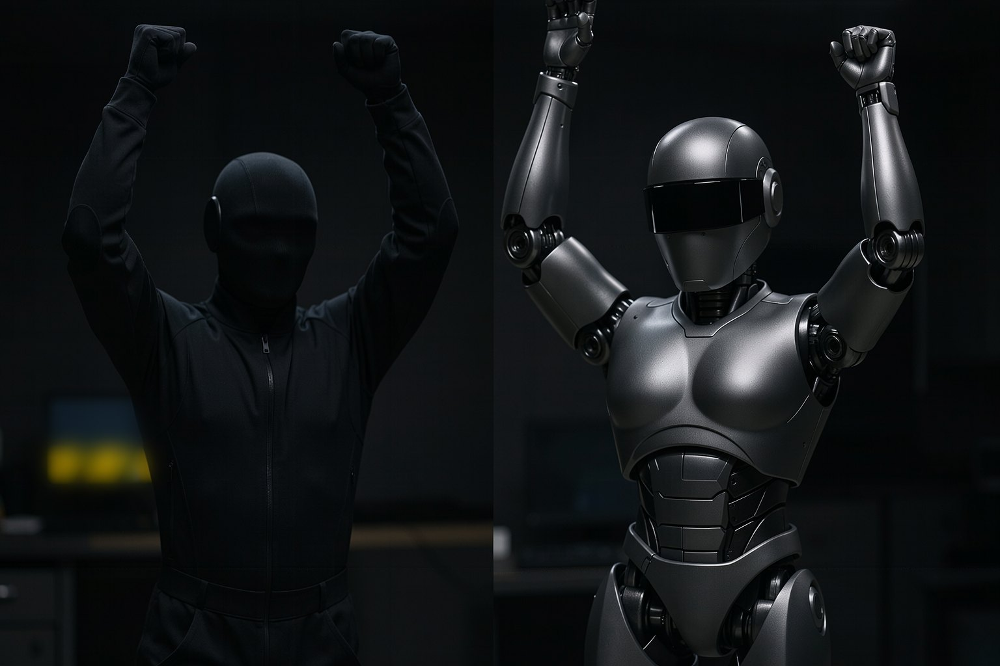

E1 · GMR environment
10 minRun the install block and confirm the versions.
Done when: ~/fth/.venv-gmr/bin/python -c "import general_motion_retargeting" 2>/dev/null; echo "saída: $?" → saída: 0.
Lesson 3 · 15 min
A person is 1.70 m tall and has joints the robot does not; the G1 is 1.32 m tall and, in the Menagerie model, has 29 joints with limits. Retargeting is the computation that takes one to the other, frame by frame. In this lesson you install GMR in its own environment, take 10 s of boxing to the G1, and check every frame against the joint limits.
Start the lesson
Goal: take a human clip to the G1 with GMR in its own environment and check that no frame goes past the joint limits.
Click each block. GMR repeats this for every frame of the clip.
GMR runs on the CPU, in real time according to the paper (ICRA 2026); here, 10 s of clip in a few seconds.
Click each point.
The GMR package imports PyTorch as soon as it loads (the kinematic model uses tensors), even for BVH retargeting. Putting torch in the .venv from the MuJoCo practices would make that environment heavy for no reason.
Solution: a .venv-gmr just for it, with the CPU torch from the official PyTorch index.
At commit bb1bbe4 (04/02/2026), setup.py asks for, among others, proxqp, smplx and redis, but BVH retargeting uses the daqp solver (the default in the code) and does not need the others.
When code and the dependency list disagree, the code wins: the course installs GMR with --no-deps and pins by hand only what runs.
One environment per tool and versions pinned per project. BeyondMimic pins Isaac Lab 2.1.0; mjlab uses MuJoCo Warp with uv; in a single environment, one breaks the other.
The G1 model that GMR uses (g1_mocap_29dof.xml) has the same joint order as Menagerie, but tighter limits on 15 of the 29 joints (measured on 10/19/2026).
Because the retargeting respects GMR's limits, the result fits within Menagerie's. The reverse wouldn't hold: always check against the model that will run it.
Adds only the G1's code and model to the GMR clone (sparse-checkout add), creates the second environment and pins the tested versions. First time: the whole environment took 1.2 GB on a fresh bench, almost all of it the CPU build of torch (measured on 10/19/2026).
F=${FTH:-$HOME/fth}; cd $F/GMR
git sparse-checkout add general_motion_retargeting scripts assets/unitree_g1
cd $F && [ -d .venv-gmr ] || python3.12 -m venv .venv-gmr
. .venv-gmr/bin/activate
pip install -q --index-url https://download.pytorch.org/whl/cpu torch==2.14.1
pip install -q mujoco==3.16.0 numpy==2.5.4 scipy==1.18.1 mink==1.3.0 qpsolvers==4.13.0 daqp==0.10.3 rich tqdm loop_rate_limiters imageio
pip install -q --no-deps -e GMR
python3 -c "from importlib.metadata import version as v; print(*[f'{p} {v(p)}' for p in ('torch', 'mink', 'mujoco', 'general_motion_retargeting')], sep=' · ')"torch 2.14.1+cpu · mink 1.3.0 · mujoco 3.16.0 · general_motion_retargeting 0.2.0
One line with the four versions. GMR installed in editable mode points to the ~/fth/GMR folder.
retarget.py reads the BVH the way GMR's script for Xsens does (without its graphical interface), calls GMR frame by frame and checks each frame against the limits of the Menagerie G1.
F=${FTH:-$HOME/fth}; cd $F/corpo-inteiro && . $F/.venv-gmr/bin/activate
python3 kit/retarget.py $F/GMR/assets/xsens_bvh_test/251021_04_boxing_120Hz_cm_3DsMax.bvh --fim 1200 --nome boxe_g1; echo "saída: $?" folga = np.deg2rad(FOLGA_GRAUS)
fora = (q < lo - folga) | (q > hi + folga)clipe: 251021_04_boxing_120Hz_cm_3DsMax.bvh · 1200 quadros a 120 Hz (10.0 s) · 28 pontos do esqueleto altura do humano no clipe: 1.67 m · robô: unitree_g1 (GMR, config bvh_xsens_to_g1.json) qpos: 1200 × 36 (base 7 + 29 juntas, mesma ordem do Menagerie) menor margem até o limite: right_ankle_roll_joint (0.0°, 0 = encostado) violações de limite (Menagerie, folga 0.5°): 0 tempo de retargeting: menos de 1 min em CPU gravado: ~/fth/movimentos/boxe_g1.npz saída: 0
1200 frames, no violations. The smallest margin is the ankle touching the limit: a flat foot on the ground takes the ankle to the end of its range.
ERRO: o GMR não está neste ambiente (No module named 'general_motion_retargeting'). Ative ~/fth/.venv-gmr (aula 3). saída: 2
You ran it with the MuJoCo .venv active. GMR only exists in .venv-gmr: activate it (. ~/fth/.venv-gmr/bin/activate) and run again.
Install, retarget, check.
Run the install block and confirm the versions.
Done when: ~/fth/.venv-gmr/bin/python -c "import general_motion_retargeting" 2>/dev/null; echo "saída: $?" → saída: 0.
Run the retargeting of the 10 s of boxing.
Done when: python3 kit/retarget.py ~/fth/GMR/assets/xsens_bvh_test/251021_04_boxing_120Hz_cm_3DsMax.bvh --fim 1200 --nome boxe_g1 → violações de limite (Menagerie, folga 0.5°): 0 and saída: 0.
Retarget from frame 1200 to 2400 with --inicio 1200 --fim 2400 --nome boxe_trecho2 and compare the smallest margin with the one from the first segment.
Done when: ls ~/fth/movimentos/boxe_trecho2.npz → the file exists, and the retarget output ends in saída: 0.
The explanation appears after your answer.
Question 1 of 3
Why does the course install GMR with --no-deps?skill
Question 2 of 3
The retargeting gave 0 violations against the Menagerie limits. Why isn't that luck?
Question 3 of 3
Each frame's qpos has 36 numbers. What are the first 7?
Choose an option. The explanation appears after you try.